This project is all about how we can use convolutions to extract frequency information from images
and combine images in fun ways!
Part 1: Filters and Edges
1.1: Convolutions from Scratch
First, we need to implement a convolution, so we can actually perform filtering operations on our images.
I implemented two versions of 2D convolution in NumPy: a direct version with
four nested loops and a partially vectorized version with two loops. Both implementations flip the
filter before applying it, so they compute convolution rather than cross-correlation. To preserve the
input dimensions ('same' mode), I pad the image with zeros on both sides. This matches
scipy.signal.convolve2d(..., mode="same", boundary="fill", fillvalue=0) for the odd-sized
filters used here.
For the blur, I used a 9 × 9 box filter with every entry set to 1/81, so the filter sums to 1 and there is no energy
added/removed from our image.
def convolve(img, filt, two_loops):
if len(filt.shape) <= 1:
filt = filt.reshape(1, -1)
filt_h, filt_w = filt.shape
ref_start_time = time.perf_counter()
scipy_ref = scipy.signal.convolve2d(img, filt, 'same', 'fill', fillvalue=0)
ref_end_time = time.perf_counter()
ref_total_time = ref_end_time - ref_start_time
start_time = time.perf_counter()
filt = np.flip(filt)
h, w = img.shape
# pad image for same shape
# P = (Dout - Din + Ksize - 1)/2
# dout = din for same
hpad = (filt_h - 1) // 2
wpad = (filt_w - 1) // 2
padded = np.zeros((h + 2*hpad, w + 2*wpad))
padded[hpad:hpad+h, wpad:wpad+w] = img
res = np.zeros((h, w))
if two_loops:
for i in range(h):
for j in range(w):
res[i, j] = np.sum(padded[i:i+filt_h, j:j+filt_w] * filt)
else:
for i in range(h):
for j in range(w):
for fi in range(filt_h):
for fj in range(filt_w):
res[i, j] += filt[fi, fj] * padded[i + fi, j + fj]
end_time = time.perf_counter()
total_time = end_time - start_time
percent_slowdown = 100 * (total_time - ref_total_time) / ref_total_time
np.testing.assert_allclose(res, scipy_ref)
return res, percent_slowdown
Since the two-loop implementation uses NumPy for the local dot products, it is substantially faster than
the slow four-loop implementation. However, both implementations are slower than the native SciPy function.
It uses optimized compiled code in order to maximize efficiency.
I also noticed that near image boundaries, my use of zero-padding with the box-filter adds dark boundaries. I think playing around
with other padding methods like reflect or symmetric could have helped mitigate this effect.
When I recorded the timing of my implementations, the two-loop x-gradient implementation was 22,765.83% slower than SciPy,
while the four-loop version was 13,287.50% slower. That's a massive difference!!! For the y-gradient, the two-loop version was
15,522.97% slower and the four-loop version was 9,199.16% slower. These are essentially the same between x and y, so I think the variance is really
just noise and I should have run more trials for a real understanding. I am really confused how the
four-loop version is faster than the two-loop version though. My guess is that it's becuase small computations for a 1x3
gradient filter are fast enough where the overhead of vectorizing things ends up slowing the computation down.
Interestingly, for the 9 × 9 box filter, the two-loop version was 1,860.52% slower and the four-loop version was 18,586.03% slower.
This aligned more with what I expected! Yet, SciPy was still much faster in every case.
Below are the results of using a box blur and x-gradient and y-gradient filters on a selfie of me at
Le Mont Saint-Michel in France and on the Cameraman image!
Selfie
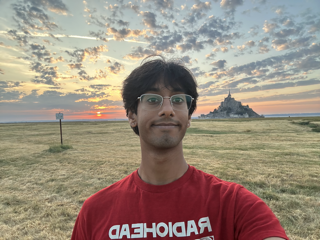
Original selfie9 × 9 box filter, two loops
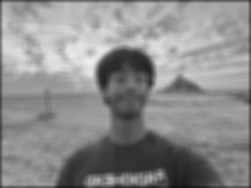
9 × 9 box filter, four loops
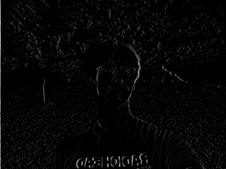
Dx, two loopsDx, four loops
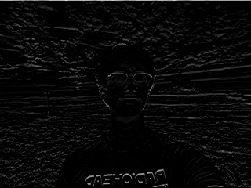
Dy, two loopsDy, four loops
Cameraman
Original grayscale image9 × 9 box filter, two loops9 × 9 box filter, four loops
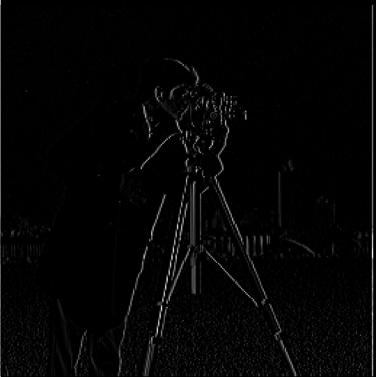
Dx, two loopsDx, four loops
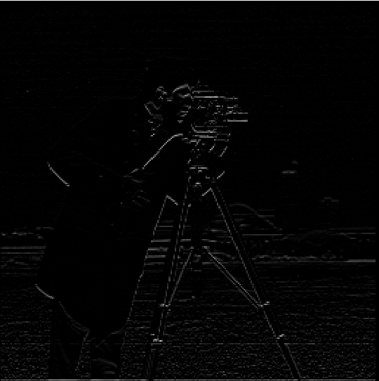
Dy, two loopsDy, four loops
1.2: Finite Difference Operator
The results from convolving the Cameraman image with the Finite Difference Operators D_x and D_y are above.
I also used these images to create a gradient image ‖∇I‖ = √((Dx ∗ I)² + (Dy ∗ I)²).
I also implemented thresholding to get rid of small gradient values that correspond to noise textures or meaningless edges in the image.
OriginalPartial derivative in xPartial derivative in y
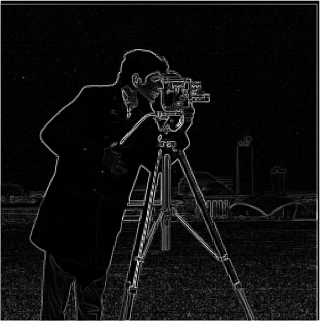
Gradient magnitude
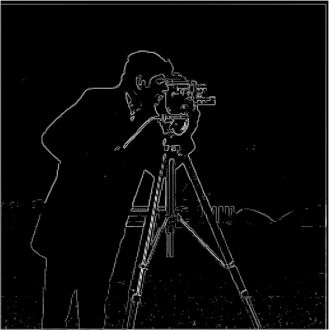
Selected threshold: 0.15 × maximum
I chose a relative threshold of 0.15 as reasonable, since it removed most of the grass and sky textures
but preserved the outline of the key subjects. With a lower threshold, noisy detail leaks into the image, and increasing
the thresholds starts to break relevant contours. You can click on the dropdown to see what others look like!
Threshold exploration
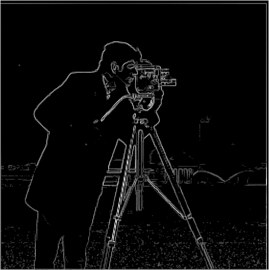
0.100.15
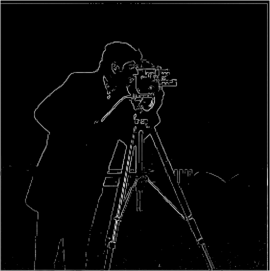
0.20
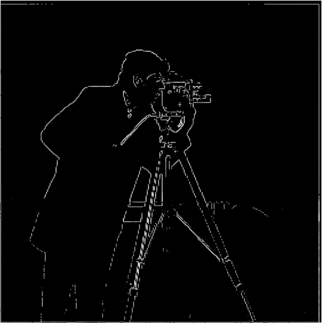
0.25
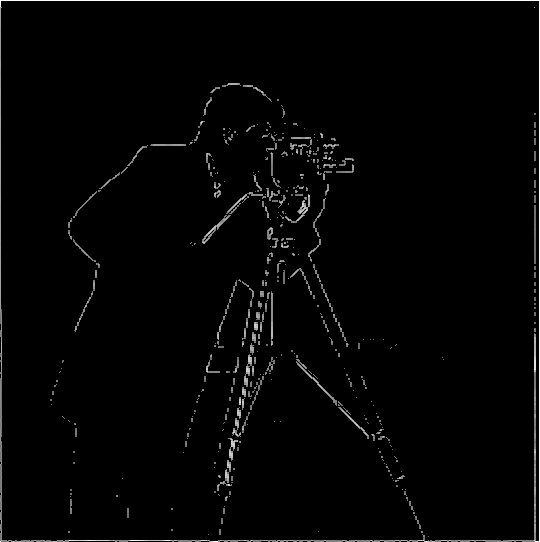
0.30
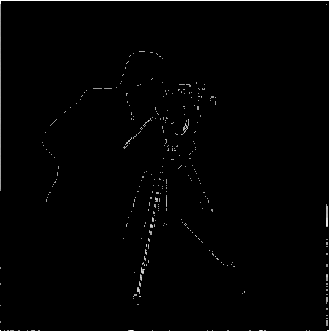
0.40
Selfie
OriginalPartial derivative in xPartial derivative in y
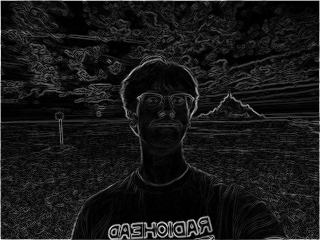
Gradient magnitude
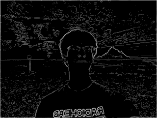
Threshold: 0.15 × maximum
Here, we see that a threshold of 0.15 doesn't work as well - which tells us that we might need to be careful
and look at images on a case-by-case basis!
1.3: Derivative of Gaussian Filters
In order to reduce our reliance on thresholding, we can try blurring our image first before taking the gradient.
Since blurring is a low-pass filter, this approach will remove spurious high-frequency textures that we don't
want showing up in our gradient image.
I created a blurred image by first creating a Gaussian kernel through taking the outer product of a 1d Gaussian kernel
with itself, then convolving with the image. The code is below!
As expected, the blurred result produces thicker, smoother contours and substantially reduces the grass noise seen in Part 1.2.
I used a 15 × 15 Gaussian kernel, and had OpenCV automatically select the sigma based on the kernel size.
As before, I used zero-padding at boundaries, and I show the effects of thresholding again below.
Another approach we can take is first differentiating the Gaussian kernel using the finite difference operators, and then convolving
that resulting kernel with the image. Since convolution is an associative operation, we'd expect to get the same results this way!
As expected, the two procedures agree perfectly! The saved difference image
is nearly completely black. If we compare to the raw finite-difference result, we see that the Gaussian methods both remove fine texture and smoothen/broaden out the remaining edges.
Part 2: Applications
2.1: Image Sharpening
Since Gaussian blurring is applying a low-pass filter, subtracting the blurred image from the original isolates the
high-frequencies of the image. Unsharp masking adds a scaled copy of that detail back to the original:
Isharp = I + α(I − G ∗ I). You can combine the terms to get the single
convolution kernel (1 + α)δ − αG, where δ is the impulse filter (returns the same image).
I used a 15 × 15 Gaussian kernel with OpenCV's automatically selected sigma. My main sharpening amount
was α = 0.8, and I also compared α values of 0.2, 0.5, 0.8, and 1.2.
High frequencies, original − blurOne-step unsharp mask, α = 0.8
α = 0.2α = 0.5
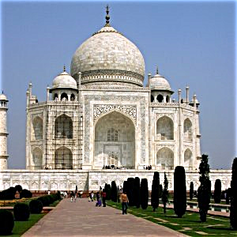
α = 0.8α = 1.2
We can see that larger alpha values increase the amount of contrast around prominent edges, and when it gets
too large, we see "deep-fried" and exaggerated halos around the dome and other details.
We can also see that my one-step unsharp mask filter and the blur-subtract-add approach give the same results!
Here are the same results but on a picture I took in Paris this summer:
For the evaluation, I sharpened the Paris image, blurred that result, and applied the unsharp mask filter again.
Re-sharpening restores some edge contrast, but it cannot recover high-frequency information that the
blur removed, so we end up with a result that is still blurry. It does look a little crisper than the blurred input, but we can't match the original.
OriginalBlurred inputBlurred, then sharpened
2.2 · Hybrid Images
Hybrid images are great for when you want to morph creatures or turn the moon into cheese!!
They combine the low frequencies of one image with the high frequencies of another, so from
nearby, the fine high-frequency structure dominates, while from farther away, those details disappear and the
low-frequency subject becomes easier to perceive. We need to align two images before creating a hybrid of them to make
sure that important features are overlapping and we dont just have two disjoint images that appear and disappear at distance.
Zoomed in, high-frequency details dominateZoomed out, low-frequency structure dominates
2. Lion + Yofi,
My dog (Yofi) loves to pretend he's a lion, so I turned him into one!
For this result, I high-pass filtered the lion with σ = 6 and low-pass filtered Yofi with σ = 9.
Both Gaussian filters used a 30 × 30 kernel.
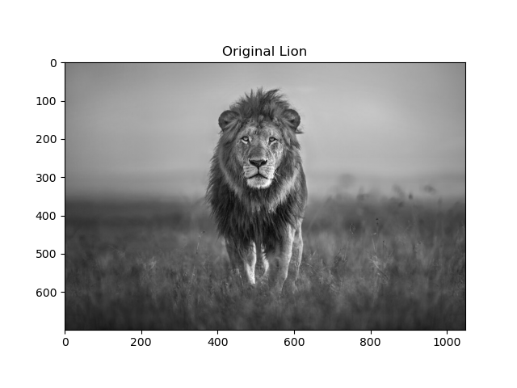
Original lion
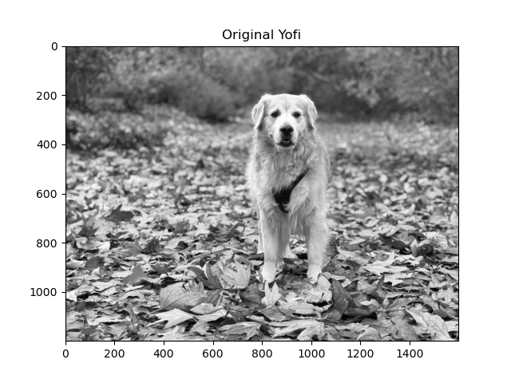
Original Yofi
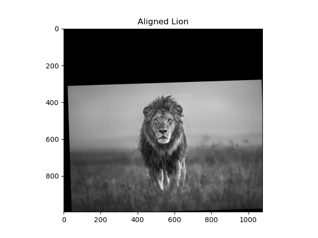
Aligned lionAligned Yofi
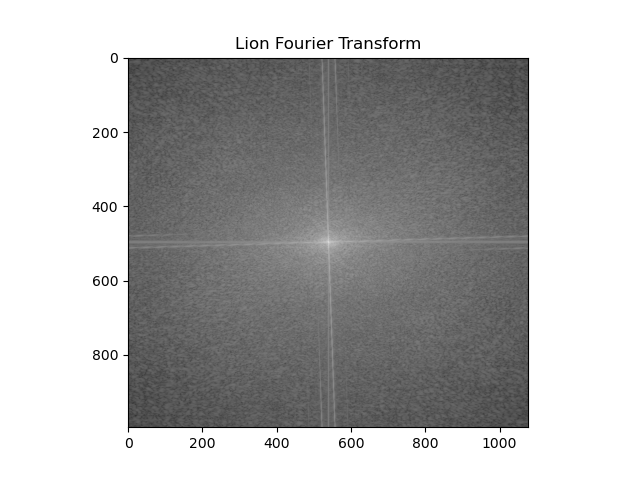
Lion, Fourier Transform Magnitude
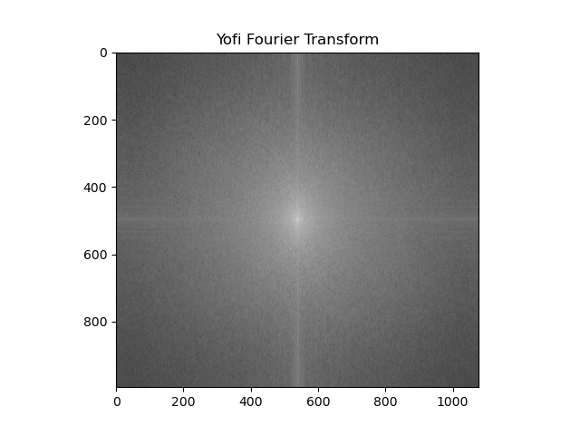
Yofi, Fourier Transform Magnitude
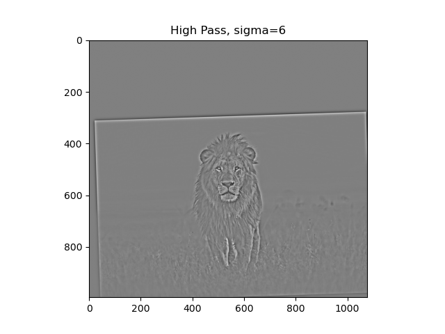
High-pass lion, σ = 6
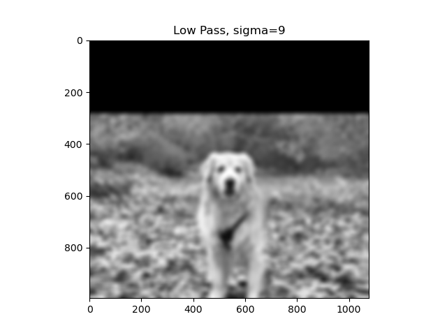
Low-pass Yofi, σ = 9
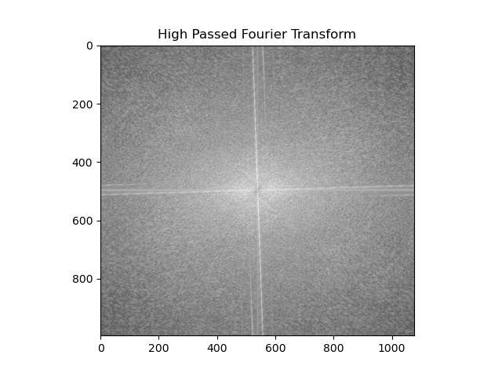
High-pass Fourier Transform Magnitude
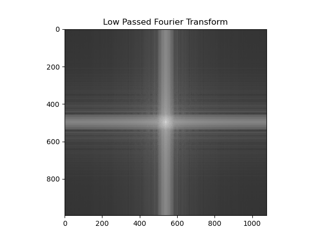
Low-pass Fourier Transform Magnitude
Final hybrid!
Zoomed inZoomed out
3. Earth + Kirby
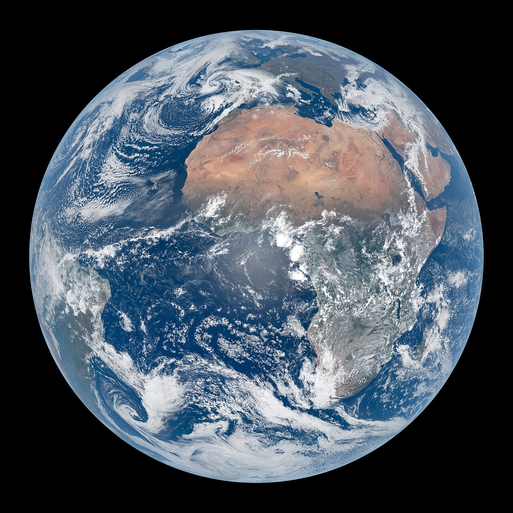
Earth input
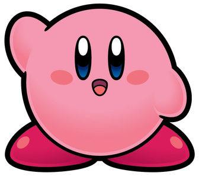
Kirby input
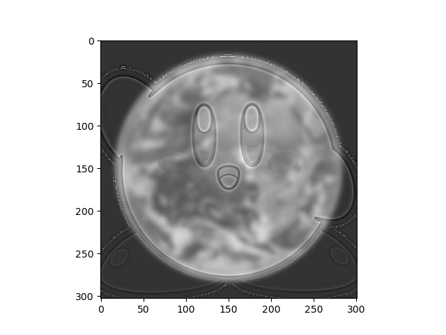
Earth + Kirby hybrid
Zoomed inZoomed out
2.3: Gaussian and Laplacian Stacks
Gaussian and Laplacian Stacks are useful for when we want to interact with specific frequency bands of an image.
A Gaussian stack repeatedly smooths an image, while the Laplacian stack stores the difference between adjacent Gaussian levels.
We store the final Gaussian blurred level at the bottom of the Laplacian stack so we can sum all the levels
and reconstruct our original image.
For this demo, I used stacks with seven levels, a base kernel size of 15, a base sigma of 2, and symmetric boundary handling,
def gaussian_stack(img, layers, k, sigma):
stack = np.zeros((*img.shape, layers))
stack[..., 0] = img
for l in range(1, layers):
sig_l = sigma ** l
k_star = k * ((l // 2) + 1)
gauss_kernel_1d = cv.getGaussianKernel(k_star, sigma=sig_l)
gaussian_filter = np.outer(gauss_kernel_1d, gauss_kernel_1d)
if len(img.shape) == 2:
stack[:, :, l] = scipy.signal.convolve2d(stack[:, :, l-1], gaussian_filter, 'same','symm')
else:
for c in range(3):
stack[:, :, c, l] = scipy.signal.convolve2d(stack[:, :, c, l-1], gaussian_filter, 'same','symm')
return stack
def laplacian_stack(img, layers, k, sigma):
gaussian = gaussian_stack(img, layers, k, sigma)
laplacian = np.zeros_like(gaussian)
for l in range(layers - 1):
laplacian[:, :, :, l] = gaussian[:, :, :, l] - gaussian[:, :, :, l+1]
laplacian[:, :, :, -1] = gaussian[:, :, :, -1]
return laplacian
Using Laplacian stacks and a mask, we can blend together two images!
At each Laplacian level, we can blend two images using the matching level of a mask's Gaussian stack.
We calculate the elementwise product of one Laplacian level with the mask's stack level, the elementwise product of the other
image's Laplacian level with 1 - mask's stack level, then add the two up.
This essentially adds specific frequency content from each image to areas of the image, defined by the mask, and the
blurring of the mask helps smooth together our two images at the correct level for each frequency scale.
I use an irregular silhouette mask to select just the top of the Space Needle while leaving out the Eiffel Tower's base and surrounding
scene and sky.
Fire over the Golden Gate... Is this what techno-capitalist hell looks like?
Golden Gate inputFire inputFinal fire-sky blend
I took this photo of the Golden Gate from my freshman year dorm!
Here, I use a mask to separate the sky horizontally, almost exactly in half, keeping the Golden Gate below and introducing fire above.
Because both images are orange, I thought this could lead to a nice blend!
Most Important Thing I Learned!!!
My biggest takeaway from this project was that frequency information is a lot more useful than I thought in the world of visual perception!
Coming from the audio world, I know how much you can do with frequencies and how important they are to analysis and perception.
However, I never realized how well such a simple approach like splitting the high and low frequencies of two different images and combining them
into one final image would work for creating hybrid illusions.
I also learned how much parameters matter - even with a seemingly sound approach, tweaking parameters, kernel sizes, sharpening strengths, crops, and standard deviations
took a lot of time in order to see satisfactory results. Sometimes, that's where a lot of the work is!